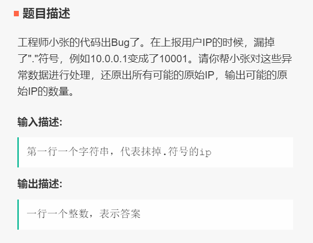
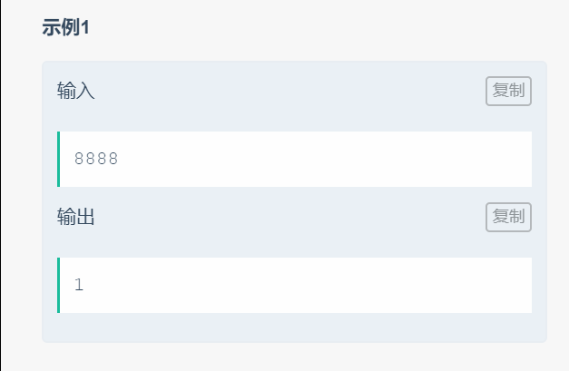

☰ 目录
009 可能ip的数量
链接和考点
| 栏目 |
详细 |
| 今日头条编程测试 |
2018.09.09 |
| 考点 |
dfs, string |
| 难度 |
Medi |
题意


分析
1- 先简答的认为， ip 有4个字段，每个字段最少一个字符， 最多三个字符。 而且要判断三个字符的数是否在0~255 之间。
这种复杂度不会太高，因为每个字段可以选{1, 2, 3} 位等情形 ， 每个字段3种选择， 遍历数最多是 $ 3 * 3 * 3 * 3 = 81$ 次，可以接受。
测试
这个A了 70%， 暂时不知道为什么， 猜测可能和ip的格式有关。
参考答案
#include <iostream>
#include <unordered_map>
#include <vector>
//#include "GlobalHead.h"
#include <vector>
#include <string>
using namespace std;
void process(string str, int & cnt, int start, int & stage){
if(!(start < str.size() )) // 如果因为字符串太短， 直接导致后面字段上的值不够， 那么直接返回
return;
if( stage == 4 ){ // 已经到了第四个字段， 检验剩下的是否合格
string cur = str.substr(start, str.size() - start);
int num = stoi(cur);
if( ( num >=0 && num <= 255 )){
cnt ++;
return;
}else{
return;
}
}
for( int i = start; i < start+3 && i < str.size() ; i++ ){
string cur = str.substr(start, i - start + 1);
int num = stoi(cur);
if( !( num >=0 && num <= 255 )) // 如果当前不满足，直接中断， 剪枝
continue;
else{
stage++;
process(str, cnt, i+1, stage);
stage--;
}
}
}
int main() {
string M;
cin >> M;
int stage = 1; // 刚开始处理第一个字段
int cnt = 0; // 记录可行的ip数
process(M, cnt, 0, stage);
cout << cnt << endl;
return 0;
}
/*output:
18888
4
*/